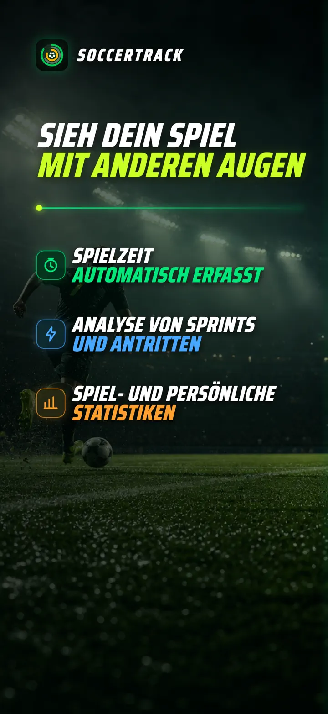
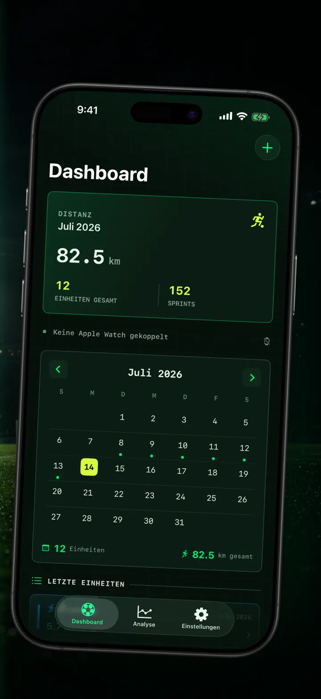
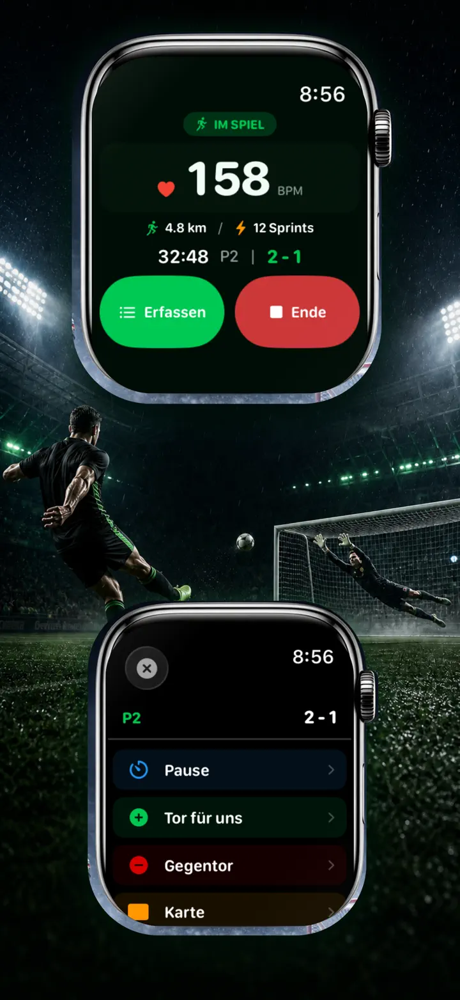
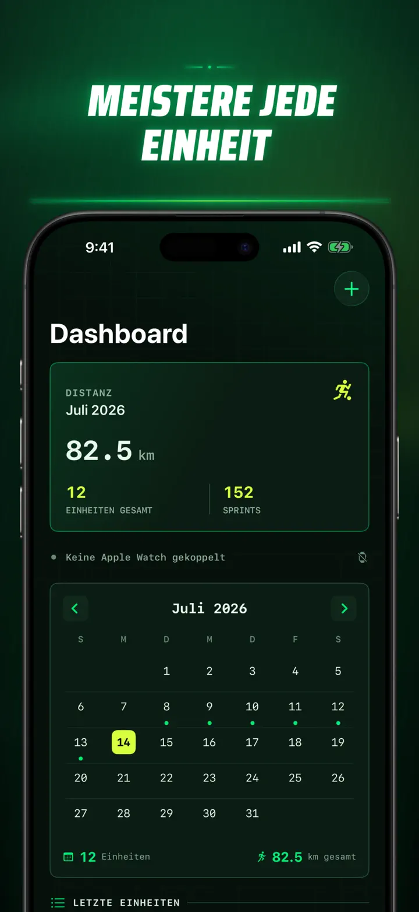
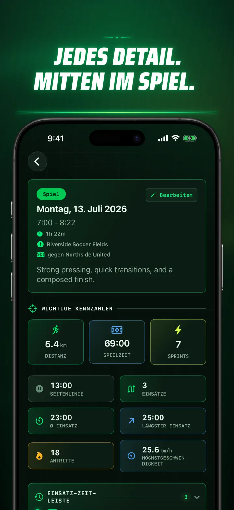
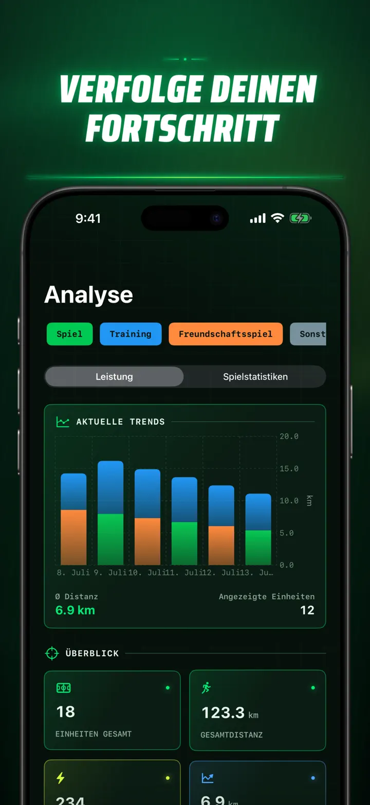
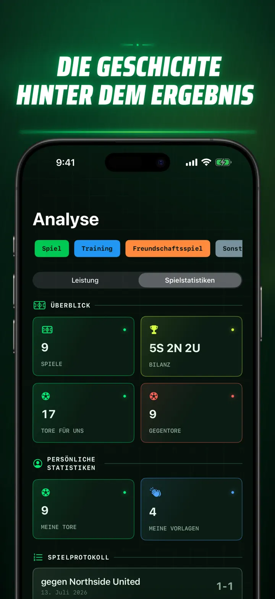
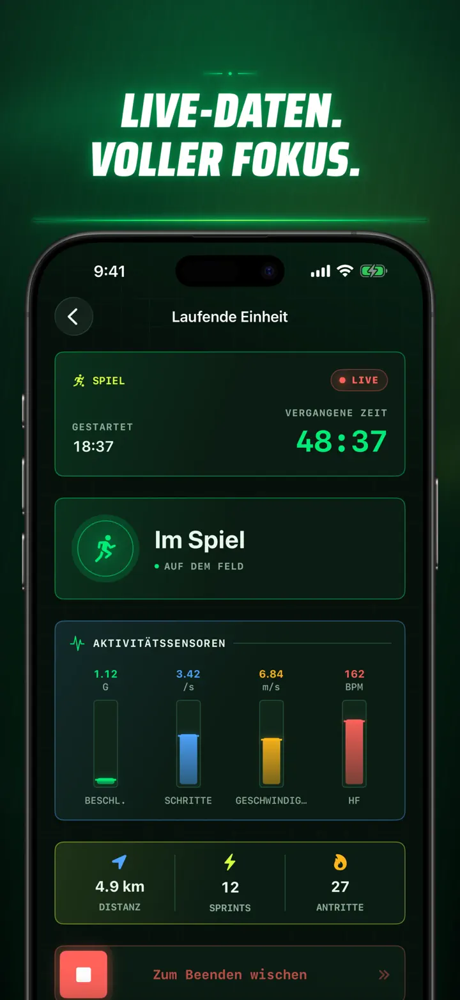
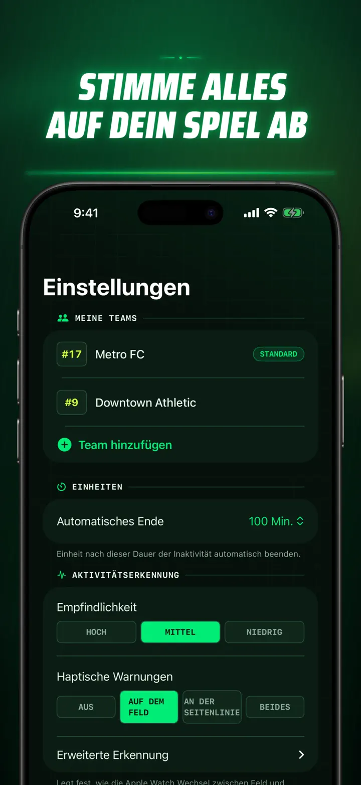
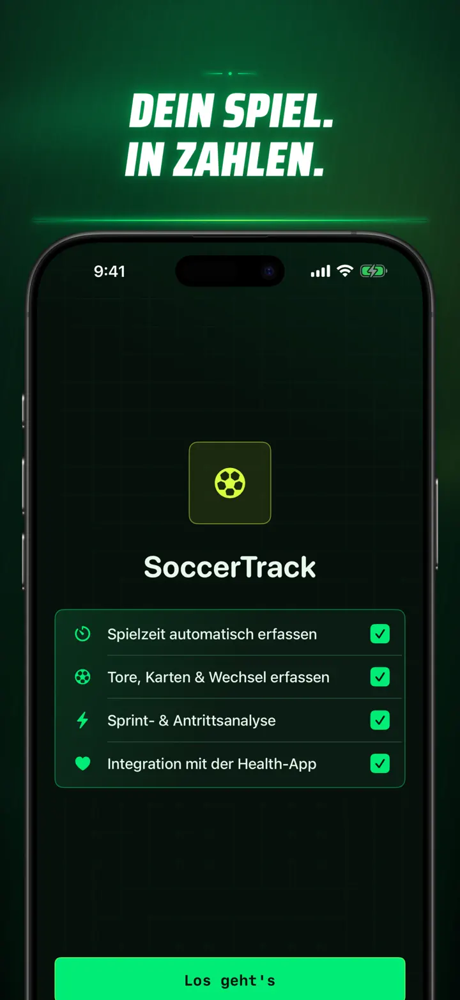

Soccer Time Track
Fußballzeit & Spielanalyse
Session starten und spielen. Apple Watch trennt automatisch Feld- und Bankzeit und erfasst Live-Werte, Sprints, Spielereignisse und Trends.
Im App Store laden
Über die App
Sieh dein Spiel mit anderen Augen.
Soccer Time Track macht die Apple Watch zum Spieltags-Tracker für Fußballer, die mehr als nur das Endergebnis verstehen wollen. Starte am Handgelenk, konzentriere dich auf das Spiel und sieh dir anschließend auf dem iPhone ein detailliertes Bild deiner Leistung an.
AUTOMATISCHE ZEIT AUF DEM FELD
Erkenne, wann du wirklich im Einsatz warst. Bewegungs-, Trainings- und Standortsignale helfen dabei, Spielphasen, geringe Aktivität und Bankzeit zu unterscheiden. Du erhältst:
- Zeit auf dem Feld und auf der Bank
- Einsatzabschnitte und einen klaren Session-Verlauf
- Eine detaillierte Aufschlüsselung deiner gesamten Einheit
SPIELTAG AM HANDGELENK
Wähle Spiel, Training, Freundschaftsspiel oder Sonstiges. Halte währenddessen fest:
- Tore für und gegen dein Team
- Eigene Tore und Vorlagen
- Gelbe und rote Karten
- Ein- und Auswechslungen sowie Spielabschnitte
DEIN SPIEL IN ZAHLEN
Analysiere mehr als nur Minuten:
- Distanz
- Durchschnitts- und Höchstgeschwindigkeit
- Sprints und hochintensive Antritte
- Herzfrequenz und aktive Kalorien
- Schrittfrequenz und Beschleunigung
LIVE-DATEN, VOLLER FOKUS
Ein gekoppeltes iPhone kann Live-Werte anzeigen, während die Apple Watch das Training weiter aufzeichnet. Du bleibst beim Spiel, deine Daten entstehen im Hintergrund.
ERKENNE DEINEN FORTSCHRITT
Führe Spiele, Trainings, Freundschaftsspiele und andere Sessions in einem Verlauf zusammen. Entdecke Trends und persönliche Bestleistungen, vergleiche Einheiten und ergänze Team, Trikotnummer, Gegner, Ort und Notizen, damit jedes Ergebnis seinen Kontext behält.
Du brauchst deine Daten anderswo? Exportiere Sessions, Einsatzabschnitte und Spielereignisse als CSV oder JSON.
FÜR APPLE WATCH UND APPLE HEALTH
Mit deiner Erlaubnis verwendet Soccer Time Track Trainings-, Herzfrequenz-, Bewegungs- und Standortdaten, um Einblicke zu erstellen und abgeschlossene Fußballtrainings in Apple Health zu sichern. Für die automatische Aufzeichnung ist eine Apple Watch erforderlich. Auf dem iPhone kannst du Sessions auch manuell hinzufügen.
DEINE DATEN, DEIN SPIEL
Deine Sessions bleiben auf deinen Geräten und bei aktivierter iCloud-Synchronisierung in deiner privaten iCloud-Datenbank. Soccer Time Track benötigt kein Konto, enthält keine Werbung und verwendet keine Analyse-Dienste von Drittanbietern.
Schätze nicht länger, wie viel du gespielt hast. Sieh, was du aus deiner Zeit gemacht hast.
Datenschutzrichtlinie: https://masawata.net/SoccerTimeTrack/privacy-policy.html Nutzungsbedingungen: https://www.apple.com/legal/internet-services/itunes/dev/stdeula/
Screenshots









Soccer Time Track
Session starten und spielen. Apple Watch trennt automatisch Feld- und Bankzeit und erfasst Live-Werte, Sprints, Spielereignisse und Trends.
Im App Store laden